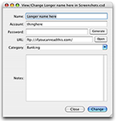
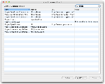

Discover CiphSafe
CiphSafe provides an easy-to-use method for storing account/password pairs as well as any general notes you wish to keep safe.
Adding and editing entries |
|
|  |
Adding and changing entries is quite simple, done with a no-nonsense entry window. Viewing and/or changing is as simple as double-clicking an entry. |
Searching is simple, Mac OS X-style |
|
|  |
Searching entries in CiphSafe is as easy as the familiar search in other Mac OS X applications: click in the search field in the upper-right corner and start typing. Click the magnifier glass to select which field to search, and the list of entries is constantly updated with your search needs. |
Importing and exporting data |
|

|
New in version 1.3, CiphSafe can export entries to a comma-separated values (CSV) or XML file. It can also import from those types of files. |
Proper Mac drag and drop support |
|

|
CiphSafe allows entries to be dragged to other CiphSafe documents and to other applications, as it should being a Mac application. |
CLEVER INTRODUCTION FOR SOME OTHER FEATURE. |
|
|
|
Praesent malesuada, odio a pellentesque euismod, felis mi vulputate lacus, vitae ornare lorem risus et pede. Morbi lacinia tincidunt lorem. Phasellus luctus lacus vel nulla. |